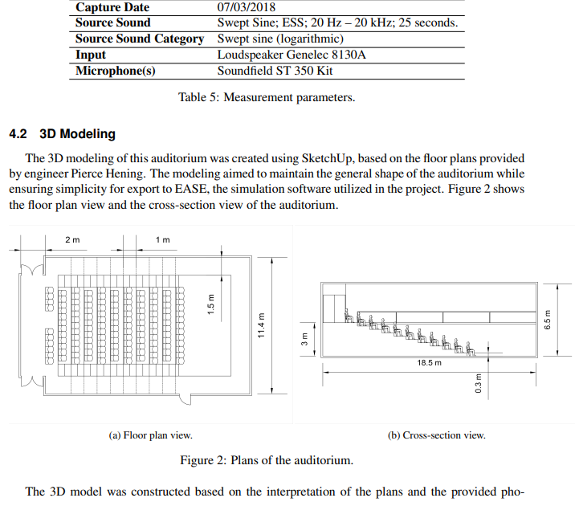
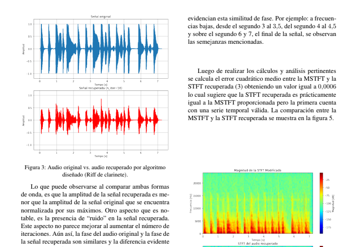
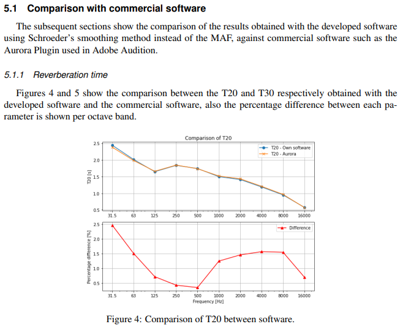
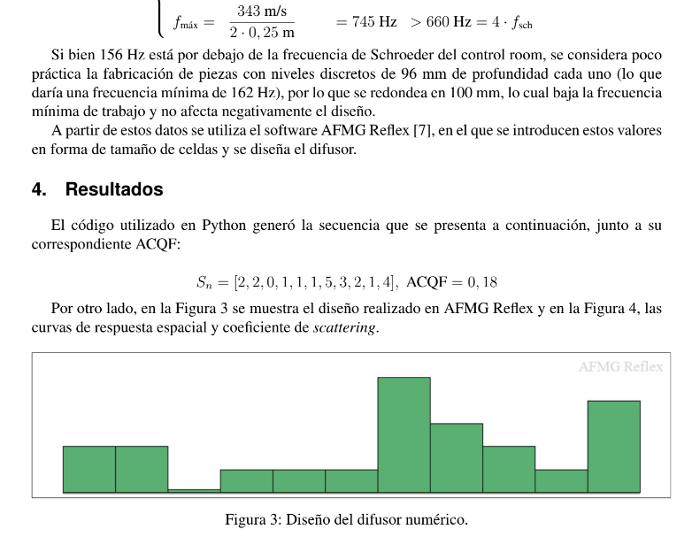
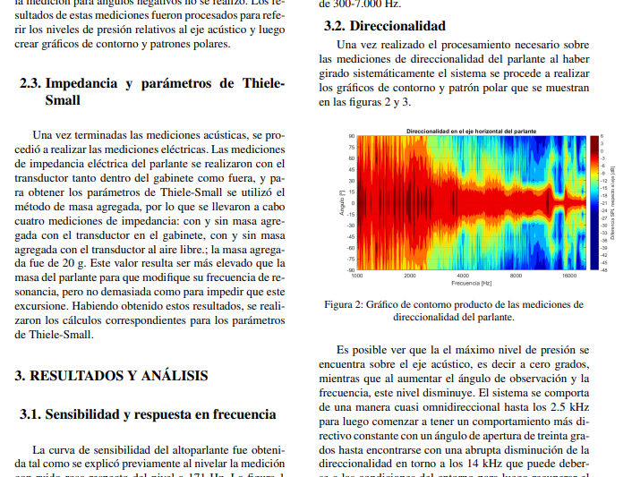
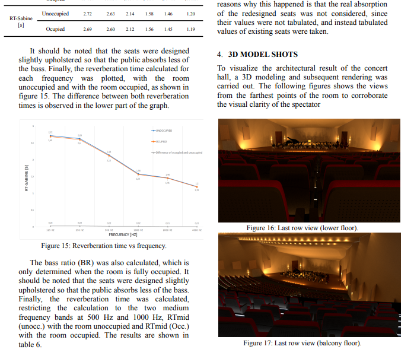
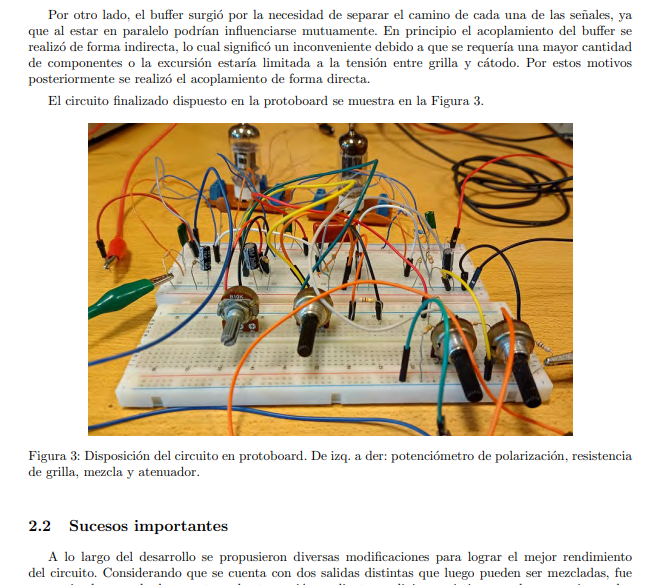

Te invito a ver una selección de proyectos en los que trabajé tanto durante mi trayectoria universitaria como en lo personal. Estos proyectos comprenden una amplia gama de áreas, desde la acústica hasta el procesamiento digital de señales y electrónica aplicada. Si alguna de estas descripciones te intriga, ¡no dudes en clickear en el botón "Ver más" para acceder al documento completo!.
Modelado en computadora y análisis de una sala de conciertos

Este artículo detalla el modelado y la simulación acústica realizada en el software EASE del Auditorio Arthur Sykes Rymer de la Universidad de York en el Reino Unido. Se calculan y comparan los parámetros STI, AlCons, RT, Echo Speech, Echo Music, Lateral Fraction y D/R con las mediciones in situ realizadas en el teatro. En la simulación, también se lleva a cabo un mapeo espacial del área del público para los parámetros de inteligibilidad, D/R y nivel de presión sonora directa. Con la afinación fina del modelo de simulación, los resultados obtenidos son consistentes con las mediciones in situ y son considerablemente similares, con algunas diferencias existentes en algunas frecuencias.
Ver más
Algoritmo de reconstrucción de fase basado en el algoritmo de Griffin & Lim

En este informe se detallan los procesos para el diseño de un algoritmo de reconstrucción de fase basado en el método de Griffin - Lim. El mismo busca estimar una señal temporal a partir de una magnitud modificada de la transformada en tiempo corto de Fourier (STFT) dada. El algoritmo se diseña para que en cada iteración, el error cuadrático medio entre la STFT estimada y la STFT modificada (MSTFT) proporcionada decrezca. El algoritmo desarrollado ha sido probado con señales de distinto origen tales como instrumentos musicales, voz hablada y sonidos
de la naturaleza; el proceso ha demostrado ser eficaz con un costo computacional mínimo.
Ver más
Desarrollo de software para el procesamiento de Respuestas al Impulso de un Recinto (RIRs)

Este estudio presenta una implementación de software de procesamiento de respuesta al impulso de un reciento desarrollado en Python. El software está diseñado para ser fácil de usar, especialmente para usuarios con poca o ninguna experiencia en programación. El programa desarrollado es capaz de obtener parámetros de habitación como RT20, RT30, EDT, Tt, EDTt, C50, C80 e IACC a partir de una medición de respuesta de habitación de barrido de seno logarítmico. Los resultados se compararon con el software popular Aurora Acoustical Parameters y se concluyó que el software desarrollado es confiable, revelando una diferencia que no supera el 5% en el cálculo de los parámetros temporales dentro de las bandas de frecuencia válidas.
Ver más
Diseño de un difusor numérico unidimensional

En este informe se realiza el diseño de un difusor QRD11 unidimensional para ser utilizado en
un estudio de grabación ubicado en un barrio de Buenos Aires. Se lo diseña específicamente para operar en un rango de frecuencias de 165 Hz a 745 Hz. Para esto, se emplea el método de
Schroeder, utilizando una secuencia de periodo 11 con un ACQF de 0,18, un ancho de celda de 23
cm, una cantidad de niveles igual a 5 y una profundidad máxima de 50 cm. Se utiliza el software
AFMG Reflex para comprobar los resultados teóricos y se modela en 3D mediante SketchUp.
Como resultado, se obtiene un difusor con una superficie total de 3,8 m2.
Ver más
Medición de sensibilidad, respuesta en frecuencia, direccionalidad, y parámetros de Thiele-Small de un parlante

Este trabajo detalla el proceso de medición de las características de un parlante montado en un gabinete.
Se realizaron mediciones de sensibilidad, respuesta en frecuencia, direccionalidad, impedancia y parámetros de Thiele-Small para realizar un posterior análisis sobre los resultados obtenidos. Cabe destacar que las mediciones no fueron
realizadas en un ambiente tratado acústicamente, sino que se llevaron a cabo en un recinto "real".
Ver más
Rediseño acústico de una sala de conciertos

Este estudio propone una remodelación acústica para el auditorio del Palacio de Bellas Artes, ubicado en la Ciudad de México. El objetivo de esta remodelación es mejorar el rendimiento acústico del auditorio. Se realizó un estudio exhaustivo con el propósito de comprender el comportamiento acústico, así como la interacción del edificio con su entorno. Se analizó la ubicación espacial del centro cultural para identificar posibles fuentes de ruido, y se estudió la sala que será rediseñada para mejorar la línea de visión respetando las regulaciones locales.
Ver más
Preampilficador valvular para guitarra con generador armónico

El presente proyecto surge de la propuesta de diseñar un preamplificador valvular para guitarra eléctrica. Posteriormente surgió la necesidad de que dicho preamplificador cuente con la posibilidad de generar armónicos, es decir, que sea un distorsionador valvular. Luego, a raíz de la idea de que el preamplificador cuente con dos tipos de distorsión distintas, se añadió una etapa con diodos de silicio. El sistema cuenta con la posibilidad de generar una mezcla pasiva de ambas etapas en la salida.
Ver más